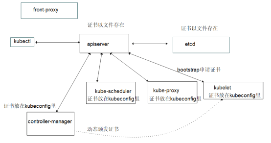

Kubernetes 集群由 **Master 节点（控制平面）**和 **Node 节点（工作节点）**组成，各自包含以下核心组件：
kubelet、kube-scheduler 等）。所有机器的CPU都是x86的64位架构，并且安装了Debian GNU/Linux 12 (bookworm)。各个主机配置如下
主机 | IP | 操作系统 | 配置 |
k8s-101 | 192.168.122.101 | Debian GNU/Linux 12 (bookworm) | 内存:4G + SSD硬盘:30G + CPU:2核 |
k8s-102 | 192.168.122.102 | Debian GNU/Linux 12 (bookworm) | 内存:4G + SSD硬盘:30G + CPU:2核 |
k8s-103 | 192.168.122.103 | Debian GNU/Linux 12 (bookworm) | 内存:4G + SSD硬盘:30G + CPU:2核 |
这三台主机在集群中分别充当的角色如下：
k8s-101: etcd服务器、控制节点、Proxy的L4、L7代理。同时作为运维主机，一些额外的服务由该主机提供，如：签发证书、dns服务、Docker的私有仓库服务、k8s资源配置清单仓库服务、共享存储（NFS）服务等。不过这些额外服务在需要的时候再安装，现在只是这么规划
k8s-102: etcd服务器、控制节点、工作节点、Proxy的L4、L7代理k8s-102: etcd服务器、控制节点、工作节点以上是在资源有限的情况下做的高可用资源分配，其实就是把其群的各个组件合理分配到这3台主机上。如果你的服务器资源充足，应当将各个服务分别独立部署到更多主机上，这样更加合理。
在 192.168.122.101 执行以下命令
hostnamectl set-hostname k8s-101
cat >> /etc/hosts <<EOF
192.168.122.101 k8s-101
EOF
在 192.168.122.102 执行以下命令
hostnamectl set-hostname k8s-102
cat >> /etc/hosts <<EOF
192.168.122.102 k8s-102
EOF
在 192.168.122.103 执行以下命令
hostnamectl set-hostname k8s-103
cat >> /etc/hosts <<EOF
192.168.122.103 k8s-103
EOF
ubernetes 默认不支持在启用交换分区的情况下运行，可以使用以下命令临时关闭交换分区
swapoff -a
如果你希望永久禁用交换分区，可以编辑 /etc/fstab 文件，注释掉或删除与交换分区相关的行。然后运行以下命令确保交换分区被禁用：
swapoff -a
containerd的下载网址为https://containerd.io/downloads/，在撰写文章时（2025.02.15）最新版本是v2.0.2，安装到三台机器作为容器运行时环境，分别执行以下操作
从 https://github.com/containerd/containerd/releases 下载 containerd-<版本>-<操作系统>-<架构>.tar.gz 存档，验证其 sha256sum，并将其解压到 /usr/local 目录下
tar Cxzvf /usr/local containerd-2.0.2-linux-amd64.tar.gz
mkdir -p /usr/local/lib/systemd/system/
cat > /usr/local/lib/systemd/system/containerd.service <<EOF
[Unit]
Description=containerd container runtime
Documentation=https://containerd.io
After=network.target local-fs.target dbus.service
[Service]
ExecStartPre=-/sbin/modprobe overlay
ExecStart=/usr/local/bin/containerd
Type=notify
Delegate=yes
KillMode=process
Restart=always
RestartSec=5
# Having non-zero Limit*s causes performance problems due to accounting overhead
# in the kernel. We recommend using cgroups to do container-local accounting.
LimitNPROC=infinity
LimitCORE=infinity
# Comment TasksMax if your systemd version does not supports it.
# Only systemd 226 and above support this version.
TasksMax=infinity
OOMScoreAdjust=-999
[Install]
WantedBy=multi-user.target
EOF
systemctl daemon-reload
systemctl enable --now containerd
runc 是一个轻量级的容器运行时工具，负责根据 OCI（Open Container Initiative）规范创建和运行容器。containerd 依赖 runc 来实际启动和管理容器。
从 https://github.com/opencontainers/runc/releases 下载 runc.<架构> 二进制文件，验证其 sha256sum，并将其安装为 /usr/local/sbin/runc。
install -m 755 runc.amd64 /usr/local/sbin/runc
该二进制文件是静态构建的，应该适用于任何 Linux 发行版。
CNI（Container Network Interface）插件用于配置容器的网络，包括分配 IP 地址、设置网络接口、配置路由等。通常需要安装，除非明确不需要网络功能。
从 https://github.com/containernetworking/plugins/releases 下载 cni-plugins-<操作系统>-<架构>-<版本>.tgz 存档，验证其 sha256sum，并将其解压到 /opt/cni/bin 目录下：
mkdir -p /opt/cni/bin
tar Cxzvf /opt/cni/bin cni-plugins-linux-amd64-v1.6.2.tgz
将 /opt/cni/bin 目录添加到 $PATH 中，执行以下命令追加到 /etc/profile 文件中
echo 'export PATH=$PATH:/opt/cni/bin' >> /etc/profile
source /etc/profile
创建 CNI 配置文件目录
mkdir -p /etc/cni/net.d
cat > /etc/cni/net.d/10-mynet.conf <<EOF
{
"cniVersion": "0.4.0",
"name": "mynet",
"type": "bridge",
"bridge": "cni0",
"isGateway": true,
"ipMasq": true,
"ipam": {
"type": "host-local",
"subnet": "10.22.0.0/16",
"routes": [
{ "dst": "0.0.0.0/0" }
]
}
}
EOF
重启 containerd
systemctl restart containerd
这些二进制文件是静态构建的，应该适用于任何 Linux 发行版。
containerd 是一个强大的容器运行时，但它本身是一个守护进程，需要通过命令行工具（CLI）来交互。不同的 CLI 工具（如 ctr、nerdctl、crictl）是为了满足不同用户和场景的需求而设计的。以下是它们的区别和适用场景：
工具 | 目标用户 | 功能特点 | 适用场景 |
|
|
| 开发和调试 |
| 普通用户和运维人员 | 类似 Docker 的体验，功能丰富 | 日常容器管理、生产环境 |
| Kubernetes 管理员和开发者 | 针对 CRI 设计，适合 Kubernetes 环境 | 调试 Kubernetes 节点和容器运行时 |
在这里，我们额外安装 nerdctl 工具，以方便后续操作。在 https://github.com/containerd/nerdctl/releases 下载对应的操作系统版本，在撰写这边文章时 nerdctl 的版本是 v2.0.3，安装命令如下
wget https://github.com/containerd/nerdctl/releases/download/v2.0.3/nerdctl-2.0.3-linux-amd64.tar.gz
tar -zxvf nerdctl-2.0.3-linux-amd64.tar.gz -C /usr/bin/ nerdctl
最后，加载 nerdctl 的 Bash 自动补全功能，并设置 containerd 默认的名称空间为 k8s.io，如下
# 追加配置
cat >> /etc/profile <<EOF
source <(nerdctl completion bash)
export CONTAINERD_NAMESPACE=k8s.io
EOF
# 让配置立即生效
source /etc/profile
containerd默认配置文件在 /etc/containerd/config.toml，通过运行以下命令生成一个默认配置文件：
mkdir -p /etc/containerd
containerd config default > /etc/containerd/config.toml
重启 containerd
systemctl restart containerd
cfssl 系列工具是 Cloudflare 提供的 PKI/TLS 工具，用于证书管理。可以在 https://github.com/cloudflare/cfssl 找到对应的信息，在撰写文章时版本是 1.6.6，我们下载对应操作系统的版本，安装到 k8s-101 这台主机，以 linux amd64 为例安装命令如下
wget https://github.com/cloudflare/cfssl/releases/download/v1.6.5/cfssl_1.6.5_linux_amd64 -o /usr/local/bin/cfssl
wget https://github.com/cloudflare/cfssl/releases/download/v1.6.5/cfssljson_1.6.5_linux_amd64 -o /usr/local/bin/cfssljson
wget https://github.com/cloudflare/cfssl/releases/download/v1.6.5/cfssl-certinfo_1.6.5_linux_amd64 -o /usr/local/bin/cfssl-certinfo
chmod a+x /usr/local/bin/cfssl*
以下是它们的简要功能：
在Kubernetes集群中，我们需要为集群中的各个组件生成证书，以实现安全通信和身份验证。下图展示了Kubernetes所需的主要证书

我们将在 k8s-101 生成的各个证书存放到 /etc/kubernetes/pki 里，并同步到其他主机上。
CA是证书的签发机构，签发证书的前提是有一个签发机构，下文我们搭建自己的签发机构。
使用以下命令生成CA配置
mkdir -p /etc/kubernetes/pki
cat > /etc/kubernetes/pki/ca-config.json <<EOF
{
"signing": {
"default": {
"expiry": "175200h"
},
"profiles": {
"www": {
"expiry": "175200h",
"usages": [
"signing",
"key encipherment",
"server auth",
"client auth"
]
}
}
}
}
EOF
使用以下命令生成 CA 请求文件
cat > /etc/kubernetes/pki/ca-csr.json <<EOF
{
"CN": "kubernetes",
"key": {
"algo": "rsa",
"size": 2048
},
"names": [
{
"C": "CN",
"L": "Guangzhou",
"ST": "Guangdong",
"O": "kubernetes",
"OU": "system"
}
],
"ca": {
"expiry": "175200h"
}
}
EOF
证书根字段
CN：证书名称key：定义证书类型，algo为加密类型，size为加密长度names 定义证书的通用名称，可以有多个条目
CN: Common Name，一般使用域名C: Country Code，申请单位所属国家，只能是两个字母的国家码。例如，中国只能是CN。ST: State or Province，省份名称或自治区名称L: Locality，城市或自治州名O: Organization name，组织名称、公司名称OU: Organization Unit Name，组织单位名称、公司部门ca.expiry 代表有效时间，175200h代表20年。
最后使用以下命令生成CA自签名根证书
cfssl gencert -initca ca-csr.json | cfssljson -bare ca
最后一个参数指定了证书文件名，最后生成以下三个文件
ca.csr: 证书签名申请（Certificate Signing Request）文件ca.pem: ca公钥证书ca-key.pem: ca私钥证书生成的三个文件是根证书包含的内容。后续，我们给各个服务颁发证书的时候，都基于CA根证书来颁发。
定义证书信息如下
cat > /etc/kubernetes/pki/etcd-csr.json <<EOF
{
"CN": "etcd",
"hosts": [
"127.0.0.1",
"192.168.122.101",
"192.168.122.102",
"192.168.122.103"
],
"key": {
"algo": "rsa",
"size": 2048
},
"names": [{
"C": "CN",
"ST": "Guangdong",
"L": "Guangzhou",
"O": "kubernetes",
"OU": "system"
}]
}
EOF
支持的主机列表对应本机以及所有 etcd 节点。使用以下命令生成证书
cfssl gencert -ca=ca.pem -ca-key=ca-key.pem -config=ca-config.json -profile=www etcd-csr.json | cfssljson -bare etcd
k8s的其他组件跟 apiserver 要进行双向TLS（mTLS）认证，所以 apiserver 需要有自己的证书，以下定义证书申请文件
cat > /etc/kubernetes/pki/apiserver-csr.json <<EOF
{
"CN": "apiserver",
"key": {
"algo": "rsa",
"size": 2048
},
"hosts": [
"127.0.0.1",
"10.96.0.1",
"192.168.122.100",
"192.168.122.101",
"192.168.122.102",
"192.168.122.103",
"kubernetes",
"kubernetes.default",
"kubernetes.default.svc",
"kubernetes.default.svc.cluster",
"kubernetes.default.svc.cluster.local"
],
"names": [{
"C": "CN",
"ST": "Guangdong",
"L": "Guangzhou",
"O": "kubernetes",
"OU": "system"
}]
}
EOF
该证书后续被 kubernetes master 集群使用，需要将 master 节点的 IP 都填上，同时还需要填写 service 网络的第一个IP（后续计划使用10.96.0.0 255.255.0.0 网段作为service网络，因此加上 10.96.0.1），后续可能加到集群里的IP也需要都填写上去。最后使用以下命令生成证书
cfssl gencert -ca=ca.pem -ca-key=ca-key.pem -config=ca-config.json -profile=www apiserver-csr.json | cfssljson -bare apiserver
– kube-controller-manager
controller-manager需要跟apiserver进行mTLS认证，定义证书申请文件如下
cat > /etc/kubernetes/pki/controller-manager-csr.json <<EOF
{
"CN": "system:kube-controller-manager",
"key": {
"algo": "rsa",
"size": 2048
},
"hosts": [
"127.0.0.1",
"192.168.122.100",
"192.168.122.101",
"192.168.122.102",
"192.168.122.103"
],
"names": [
{
"C": "CN",
"ST": "Guangdong",
"L": "Guangzhou",
"O": "system:kube-controller-manager",
"OU": "system"
}
]
}
EOF
hosts 列表包含所有 kube-controller-manager 节点 IP；CN 为 system:kube-controller-manager，O 为 system:kube-controller-manager，k8s里内置的ClusterRoleBindings system:kube-controller-manager 授权 kube-controller-manager所需的权限。后面组件证书都做类似操作。生成证书命令如下
cfssl gencert -ca=ca.pem -ca-key=ca-key.pem -config=ca-config.json -profile=www controller-manager-csr.json | cfssljson -bare controller-manager
kube-scheduler需要跟apiserver进行mTLS认证，生成证书申请文件如下
cat > /etc/kubernetes/pki/scheduler-csr.json <<EOF
{
"CN": "system:kube-scheduler",
"key": {
"algo": "rsa",
"size": 2048
},
"hosts": [
"127.0.0.1",
"192.168.122.100",
"192.168.122.101",
"192.168.122.102",
"192.168.122.101"
],
"names": [
{
"C": "CN",
"ST": "Guangdong",
"L": "Guangzhou",
"O": "system:kube-scheduler",
"OU": "system"
}
]
}
EOF
kubernetes内置的ClusterRoleBindings system:kube-scheduler将授权kube-scheduler所需的权限。生成证书命令如下
cfssl gencert -ca=ca.pem -ca-key=ca-key.pem -config=ca-config.json -profile=www scheduler-csr.json | cfssljson -bare scheduler
kube-proxy需要跟apiserver进行mTLS认证，生成证书申请请求文件如下
cat > /etc/kubernetes/pki/proxy-csr.json <<EOF
{
"CN": "system:kube-proxy",
"key": {
"algo": "rsa",
"size": 2048
},
"names": [
{
"C": "CN",
"ST": "Guangdong",
"L": "Guangzhou",
"O": "kubernetes",
"OU": "system"
}
]
}
EOF
生成证书
cfssl gencert -ca=ca.pem -ca-key=ca-key.pem -config=ca-config.json -profile=www proxy-csr.json | cfssljson -bare proxy
创建证书信息
cat > /etc/kubernetes/pki/admin-csr.json << EOF
{
"CN": "admin",
"key": {
"algo": "rsa",
"size": 2048
},
"names": [
{
"C": "CN",
"ST": "Guangzhou",
"L": "Guangdong",
"O": "system:masters",
"OU": "system"
}
]
}
EOF
生成证书
cfssl gencert -ca=ca.pem -ca-key=ca-key.pem -config=ca-config.json -profile=www admin-csr.json | cfssljson -bare admin
生成证书之后，将证书目录/etc/kubernetes/pki同步到其他主机。
我们将使用k8s-101、k8s-102、k8s-103这三台主机搭建ectd集群。在撰写此文档时（2425.02.18），etcd最新稳定版本是 3.5.18，可以从 https://github.com/etcd-io/etcd/releases/ 这个链接下载对应的安装包。
常见参数说明说下
参数 | 对应环境变量 | 说明 |
–name | ETCD_NAME | 当前etcd的唯一名称，要保证和其他节点不冲突 |
–data-dir | ETCD_DATA_DIR | 指定etcd存储数据的存储位置 |
–listen-peer-urls | ETCD_LISTEN_PEER_URLS | 端对端的通信url，包含主机地址和端口号，指定当前etcd和其他节点etcd通信时的服务地址和端口。 |
–listen-client-urls | ETCD_LISTEN_CLIENT_URLS | 指定当前etcd接收客户端指令的地址和端口，在这里的客户端我们指的是k8s集群的master节点 |
–initial-advertise-peer-urls | ETCD_INITIAL_ADVERTISE_PEER_URLS | 指定etcd广播端口，当前etcd会将数据同步到其他节点，通过2380端口发送 |
–advertise-client-urls | ETCD_ADVERTISE_CLIENT_URLS | 给客户端通告的端口 |
–initial-cluster | ETCD_INITIAL_CLUSTER | 定义etcd集群中所有节点的名称和IP，以及通信端口 |
–initial-cluster-token | ETCD_INITIAL_CLUSTER_TOKEN | 定义etcd中的token，所有节点的token必须保持一致 |
–initial-cluster-state | ETCD_INITIAL_CLUSTER_STATE | 定义etcd集群的状态，new代表新建集群，existing代表加入现有集群 |
先创建etcd默认的配置文件目录和数据目录
mkdir -p /var/lib/etcd/
安装到/opt目录，后续的k8s集群组件我们将都安装在此
# 解压
tar -zxvf etcd-v3.5.18-linux-amd64.tar.gz
# 将etc移到/opt目录，并修改etcd目录名
mv etcd-v3.5.18-linux-amd64/ /opt/etcd-v3.5.18
# 创建etcd软链接
ln -s /opt/etcd-v3.5.18 /opt/etcd
我们先在etcd目录编写启动脚本/opt/etcd/startup.sh，如下
#!/bin/bash
./etcd \
--name="etcd-server-101" \
--data-dir="/var/lib/etcd/" \
--listen-peer-urls="https://192.168.122.101:2380" \
--listen-client-urls="https://192.168.122.101:2379,http://127.0.0.1:2379" \
--initial-advertise-peer-urls="https://192.168.122.101:2380" \
--advertise-client-urls="https://192.168.122.101:2379" \
--initial-cluster="etcd-server-101=https://192.168.122.101:2380,etcd-server-102=https://192.168.122.102:2380,etcd-server-103=https://192.168.122.103:2380" \
--initial-cluster-token="etcd-cluster" \
--initial-cluster-state="new" \
--cert-file="/etc/kubernetes/pki/etcd.pem" \
--key-file="/etc/kubernetes/pki/etcd-key.pem" \
--trusted-ca-file="/etc/kubernetes/pki/ca.pem" \
--peer-cert-file="/etc/kubernetes/pki/etcd.pem" \
--peer-key-file="/etc/kubernetes/pki/etcd-key.pem" \
--peer-trusted-ca-file="/etc/kubernetes/pki/ca.pem" \
--peer-client-cert-auth \
--client-cert-auth
给启动脚本添加权限
chmod +x /opt/etcd/startup.sh
现在我们要安装supervisor，用于管理etcd服务，后续的k8s相关组件，我们都用supervisor来管理
# 安装supervisor
apt install supervisor -y
# 启动supervisor
systemctl start supervisor
# 让superivisor开机自启
systemctl enable supervisor
添加etcd的supervisor进程维护脚本/etc/supervisor/conf.d/etcd-server.conf，添加以下内容
[program:etcd-server-101]
directory=/opt/etcd
command=/opt/etcd/startup.sh
numprocs=1
autostart=true
autorestart=true
startsecs=30
startretries=3
exitcodes=0,2
stopsignal=QUIT
stopwaitsecs=10
user=root
redirect_stderr=true
stdout_logfile=/data/logs/supervisor/etcd.stdout.log
stdout_logfile_maxbytes=64MB
stdout_logfile_backups=4
stdout_capture_maxbytes=1MB
stdout_event_enabled=false
注意：在不同的主机上使用不同的服务名称，这样好辨别，如k8s-101使用etcd-server-101，如k8s-102使用etcd-server-102
supervisor相关参数：
program: 程序名称directory: 脚本目录command: 启动的命令numprocs: 启动的进程数autostart: 是否开启自动启动autorestart: 是否自动重启startsecs: 启动之后多少时间后判定为已起来startretries: 重启次数exitcodes: 退出的codestopsignal: 停止信号stopwaitsecs: 停止等待的时间redirect_stderr: 是否重定向标准输出stdout_logfile: 进程标准输出内容写入文件stdout_logfile_maxbytes: stdout_logfile文件做log滚动时，单个stdout_logfile文件的最大字节数，默认50M，设置为0则认为不做log滚动方式stdout_logfile_backups: stdout_logfile备份文件个数，默认为10stdout_capture_maxbytes: 当进程处于stdout capture mode模式的时候，写入capture FIFO的最大字节数限制，默认为0，此时认为stdout capture mode模式关闭stdout_event_enabled: 如果设置为true，在进程写入标准文件是会发起PROCESS_LOG_STDOUT更新supervisod配置文件
# 创建supervisor日志目录
mkdir -p /data/logs/supervisor/
# 更新supervisod配置
supervisorctl update
通过supervisorctl status查询supervisord状态，看到如下内容，代表supervisor正常运行
root@debian:/opt/etcd# supervisorctl status
etcd-server-101 RUNNING pid 85297, uptime 0:04:38
此时，我们再使用netstat -luntp | grep etcd查看网络服务端口，看到如下信息代表etcd已经正常启动
root@debian:/opt/etcd# netstat -luntp | grep etcd
tcp 0 0 192.168.122.101:2379 0.0.0.0:* LISTEN 85298/./etcd
tcp 0 0 127.0.0.1:2379 0.0.0.0:* LISTEN 85298/./etcd
tcp 0 0 192.168.122.101:2380 0.0.0.0:* LISTEN 85298/./etcd
为了方便直接调用etcdctl命令，我们还可以创建其软连接
ln -s /opt/etcd/etcdctl /usr/local/bin/etcdctl
我们在任意节点使用etcdctl命令检查集群状态，需要注意的是，要确切指定证书的位置
etcdctl --cacert="/etc/kubernetes/pki/ca.pem" --cert="/etc/kubernetes/pki/etcd.pem" --key="/etc/kubernetes/pki/etcd-key.pem" --endpoints="https://192.168.122.101:2379,https://192.168.122.102:2379,https://192.168.122.103:2379" endpoint status --write-out=table
如果看到如下输出，代表 ectd 集群搭建成功
+----------------------------+------------------+---------+---------+-----------+------------+-----------+------------+--------------------+--------+
| ENDPOINT | ID | VERSION | DB SIZE | IS LEADER | IS LEARNER | RAFT TERM | RAFT INDEX | RAFT APPLIED INDEX | ERRORS |
+----------------------------+------------------+---------+---------+-----------+------------+-----------+------------+--------------------+--------+
| https://192.168.122.101:2379 | c8815bb4b21730b3 | 3.5.18 | 311 kB | true | false | 3 | 37628 | 37628 | |
| https://192.168.122.102:2379 | f30299e8a0b43b4d | 3.5.18 | 311 kB | false | false | 3 | 37628 | 37628 | |
| https://192.168.122.103:2379 | 61c90f737ccf2682 | 3.5.18 | 311 kB | false | false | 3 | 37628 | 37628 | |
+----------------------------+------------------+---------+---------+-----------+------------+-----------+------------+--------------------+--------+
为了验证etcd集群是否正常工作，我们还可以现在k8s-101设置一个值，如下
etcdctl put name lixiaoming123
再通过k8s-102和k8s-103去读取值，如果正常取到，代表etcd集群正常工作，如下命令
etcdctl get name
如果需要了解etcdctl这个指令的更多用法，使用--help参数即可查看。
在撰写这个文档时，kubernetes最新稳定版本为v1.32.2，所以这里也采用这个版本。通过 https://kubernetes.io/zh-cn/releases/ 下载最新的对应操作系统的稳定版本。
我们下载好对应的 "Server Binarie" 之后，在所有k8s主机上执行安装，如下步骤
# 解压安装包
tar -zxvf kubernetes-server-linux-amd64.tar.gz
# 将安装包移到/opt目录下并根据版本重命名
mv kubernetes /opt/kubernetes-v1.32.2
# 创建软连接
ln -s /opt/kubernetes-v1.32.2/ /opt/kubernetes
在k8s二进制安装目录里包含了k8s源码包，还包含k8s核心组件的docker镜像，因为我们的核心服务不运行在容器里，所以可以删除掉，操作过程如下
# 进入k8s目录
cd /opt/kubernetes
# 删除源代码
rm kubernetes-src.tar.gz
# 删除二进制文件目录下以tar作为名称后缀的docker镜像包
rm -rf server/bin/*.tar
搭建好etcd数据库集群之后，我们就可以安装apiserver组件了，在所有主机上安装apiserver，以下是具体的安装过程。
因为后面要配置kubelet的bootstrap认证，即kubelet启动时自动创建CSR请求，这里需要在apiserver上开启token的认证。所以先在master上生成一个随机值作为token。下面在一台主机操作即可
# 创建证书目录
openssl rand -hex 10
假设生成的token为88c916f382dc619a6bca，把这个token写入到一个文件里，这里写入到 /etc/kubernetes/bb.csv，如下
cat > /etc/kubernetes/bb.csv <<EOF
88c916f382dc619a6bca,kubelet-bootstrap,10001,"system:node-bootstrapper"
EOF
这里第二列定义了一个用户名kubelet-bootstrap，后面在配置kubelet时会为此用户授权。创建好该文件后，同步到其他主机。
在apiserver二进制文件目录创建/opt/kubernetes/server/bin/kube-apiserver.sh启动脚本文件，写入以下内容
#!/bin/bash
./kube-apiserver \
--v=2 \
--logtostderr=true \
--allow-privileged=true \
--bind-address="192.168.122.101" \
--secure-port="6443" \
--token-auth-file="/etc/kubernetes/bb.csv" \
--advertise-address="192.168.122.101" \
--service-cluster-ip-range="10.96.0.0/16" \
--service-node-port-range="30000-60000" \
--etcd-servers="https://192.168.122.101:2379,https://192.168.122.102:2379,https://192.168.122.103:2379" \
--etcd-cafile="/etc/kubernetes/pki/ca.pem" \
--etcd-certfile="/etc/kubernetes/pki/etcd.pem" \
--etcd-keyfile="/etc/kubernetes/pki/etcd-key.pem" \
--client-ca-file="/etc/kubernetes/pki/ca.pem" \
--tls-cert-file="/etc/kubernetes/pki/apiserver.pem" \
--tls-private-key-file="/etc/kubernetes/pki/apiserver-key.pem" \
--kubelet-client-certificate="/etc/kubernetes/pki/apiserver.pem" \
--kubelet-client-key="/etc/kubernetes/pki/apiserver-key.pem" \
--service-account-key-file="/etc/kubernetes/pki/ca-key.pem" \
--service-account-signing-key-file="/etc/kubernetes/pki/ca-key.pem" \
--service-account-issuer="https://kubernetes.default.svc.cluster.local" \
--kubelet-preferred-address-types="InternalIP,ExternalIP,Hostname" \
--enable-admission-plugins="NamespaceLifecycle,LimitRanger,ServiceAccount,DefaultStorageClass,DefaultTolerationSeconds,NodeRestriction,ResourceQuota" \
--authorization-mode="Node,RBAC" \
--enable-bootstrap-token-auth=true
#--requestheader-client-ca-file=/etc/kubernetes/pki/front-proxy-ca.pem \
#--proxy-client-cert-file=/etc/kubernetes/pki/front-proxy-client.pem \
#--proxy-client-key-file=/etc/kubernetes/pki/front-proxy-client-key.pem \
#--requestheader-allowed-names=aggregator \
#--requestheader-group-headers=X-Remote-Group \
#--requestheader-extra-headers-prefix=X-Remote-Extra- \
#--requestheader-username-headers=X-Remote-User
赋予执行权限
chmod +x /opt/kubernetes/server/bin/kube-apiserver.sh
上面注释的部分是配置聚合层的，本环境里没有启用聚合层所以这些选项被注释了，如果配置了聚合层的话，则需要把#取消。相关参数说明
--v：日志输出级别--logtostderr：将输出记录到标准日志，而不是文件，默认是true--allow-privileged：是否使用超级管理员权限创建容器，默认为false--bind-address：绑定的IP地址，如果没有指定地址（0.0.0.0或者::），默认是 0.0.0.0，代表所有的网卡都在监听服务--secure-port：参数指定的端口号对应监听的IP地址--token-auth-file：该文件用于指定api-server颁发证书的token授权--advertise-address：向集群广播的ip地址，这个ip地址必须能被集群的其他节点访问，如果不指定，将使用–bind-address，如果不指定–bind-addres，将使用默认网卡--service-cluster-ip-range：创建service时，使用的虚拟网段--service-node-port-range：创建service时，服务端口使用的端口范围（默认 30000-32767）--etcd-cafile：访问etcd时使用，ectd的ca文件--etcd-certfile：访问etcd时使用，ectd的证书文件--etcd-servers：各个etcd节点的IP和端口号--etcd-keyfile：访问etcd时使用，ectd的证书私钥文件--client-ca-file：访问apiserver时使用，客户端ca文件--tls-cert-file：访问apiserver时使用，tls证书文件--tls-private-key-file：访问apiserver时使用，tls证书私钥文件--kubelet-client-certificate：访问kubelet时使用，客户端证书路径--kubelet-client-key：访问kubelet时使用，客户端证书私钥--service-account-key-file：包含 PEM 编码的 x509 RSA 或 ECDSA 私钥或公钥，用来检查 ServiceAccount 的令牌--service-account-signing-key-file：指向包含当前服务账号令牌发放者的私钥的文件路径。 此发放者使用此私钥来签署所发放的 ID 令牌--service-account-issuer：服务账户令牌发放者的身份标识--enable-admission-plugins：允许使用的插件--authorization-mode：授权模式--enable-bootstrap-token-auth：是否使用token的方式来自动颁发证书，如果主机节点比较多的时候，手动颁发证书可能不太现实，可以使用基于token的方式自动颁发证书以上是我们在启动apiserver的时候常用的参数，apiserver具有很多参数，很多参数也有默认值，可以./kube-apiserver --hep命令查看更多的帮助。
创建supervisor配置文件/etc/supervisor/conf.d/kube-apiserver.conf
[program:kube-apiserver-160]
directory=/opt/kubernetes/server/bin
command=/opt/kubernetes/server/bin/kube-apiserver.sh
numprocs=1
autostart=true
autorestart=true
startsecs=30
startretries=3
exitcodes=0,2
stopsignal=QUIT
stopwaitsecs=10
user=root
redirect_stderr=true
stdout_logfile=/data/logs/supervisor/apiserver.stdout.log
stdout_logfile_maxbytes=64MB
stdout_logfile_backups=4
stdout_capture_maxbytes=1MB
stdout_event_enabled=false
更新supervisor服务
supervisorctl update
再使用supervisorctl status命令查看apiserver启动状态，如果显示如下内容，代表正常服务
此时，还可以使用netstat -luntp | grep kube-api命令查看网络服务的端口是否正常，如果正常，将返回如下内容
负载均衡是网络层的一种机制，它将请求分发到后端服务器，从而实现高可用和高性能。负载均衡器通常包含一个或多个负载均衡器，每个负载均衡器负责将请求分发到后端服务器。负载均衡器通常使用TCP或UDP协议进行通信，并通过网络层（如TCP或UDP）将请求分发到后端服务器。负载均衡器通常使用轮询、权重、会话保持等功能来优化请求分发。
现在，我们需要在k8s-101和k8s-102上安装nginx作为反向代理服务且两个服务实现负载均衡，再使用keepalived保证高可用性
k8s-101在安装harbor时已经安装过，需要继续在k8s-102上安装
# 安装依赖
apt install -y gcc make libpcre3-dev libssl-dev zlib1g-dev
# 下载代码
wget https://nginx.org/download/nginx-1.26.3.tar.gz
# 解压文件
tar -zxvf nginx-1.26.3.tar.gz
# 进入源码目录
cd nginx-1.26.3
# 配置编译参数，--prefix参数指定安装目录
./configure \
--prefix=/usr/local/nginx-1.26.3 \
--with-stream \
--with-http_stub_status_module \
--with-http_ssl_module --with-http_v2_module \
--error-log-path=/data/logs/nginx/error.log \
--http-log-path=/data/logs/nginx/access.log
# 编译并安装
make && make install
# 设置链接
ln -s /usr/local/nginx-1.26.3 /usr/local/nginx
ln -s /usr/local/nginx/sbin/nginx /usr/local/bin/nginx
安装完成之后，我们需要两台机的nginx的配置文件/usr/local/nginx/conf/nginx.conf的http节点旁边添加四层反向代码规则，将7443端口的流量使用负载均衡的方式转发到3台主机的6443端口上
# 设置代理规则
stream {
upstream kube-apiserver {
server 192.168.122.101:6443 max_fails=3 fail_timeout=30s;
server 192.168.122.102:6443 max_fails=3 fail_timeout=30s;
server 192.168.122.103:6443 max_fails=3 fail_timeout=30s;
}
server {
listen 7443;
proxy_connect_timeout 2s;
proxy_timeout 900s;
proxy_pass kube-apiserver;
}
}
在两台主机上配置好规则之后，通过nginx -t命令检查配置结果，如果输出以下内容代表配置正确
nginx: the configuration file /etc/nginx/nginx.conf syntax is ok
nginx: configuration file /etc/nginx/nginx.conf test is successful
配置成功之后，启动nginx，如下指令
# 启动ginx，k8s-101主机使用 nginx -s reload重新加载配置即可
nginx
要让你手动编译安装的 Nginx 实现开机自启，你可以通过以下几种方式来完成（基于常见的 Linux 系统，如 Ubuntu、CentOS 等）。
在 /etc/systemd/system/ 目录下创建一个 nginx.service 文件：
vim /etc/systemd/system/nginx.service
[Unit]
Description=The NGINX HTTP and reverse proxy server
After=network.target
[Service]
ExecStart=/usr/local/nginx/sbin/nginx
ExecReload=/usr/local/nginx/sbin/nginx -s reload
ExecStop=/usr/local/nginx/sbin/nginx -s quit
PIDFile=/usr/local/nginx/logs/nginx.pid
Restart=on-failure
Type=forking
[Install]
WantedBy=multi-user.target
systemd 配置systemctl daemon-reload
systemctl enable nginx --now
Keepalived 的虚拟 IP 通过 VRRP 协议在多个服务器间切换，确保服务高可用性和负载均衡。这个虚拟 IP 是 Keepalived 配置的 IP 地址，不属于任何特定服务器，而是由主服务器持有，主服务器故障时切换到备用服务器。我们将使用keepalived实现代理服务器的高可用，以下是安装过程
apt install keepalived -y
在两台主机的创建/etc/keepalived/check_port.sh脚本文件，添加以下内容
#!/bin/bash
CHK_PORT=$1
if [ -n "$CHK_PORT" ]; then
PORT_PROCESS=`ss -lnt|grep $CHK_PORT|wc -l`
if [ $PORT_PROCESS -eq 0 ]; then
echo "Port $CHK_PORT Is Not Used, End"
exit 1
fi
else
echo "Check Port Cant Be Empty!"
exit 1
fi
添加执行权限
chmod +x /etc/keepalived/check_port.sh
以上的操作就准备好keepalived的基础环境了，接下来我们使用k8s-101这台主机作为主节点，使用k8s-102作为重节点，进行以下配置
k8s-101作为主节点，修改/etc/keepalived/keepalived.conf配置文件如下
! Configuration File for keepalived
global_defs {
router_id 192.168.122.101
vrrp_script check_nginx {
script "/etc/keepalived/check_port.sh 7443"
interval 2
weight -20
}
vrrp_instance VI_1 {
state MASTER
interface enp1s0
virtual_router_id 251
priority 100
advert_int 1
mcast_src_ip 192.168.122.101
nopreempt
authentication {
auth_type PASS
auth_pass 1111
}
virtual_ipaddress {
192.168.122.100
}
}
k8s-102作为从节点，修改/etc/keepalived/keepalived.conf配置文件如下
! Configuration File for keepalived
global_defs {
router_id 192.168.122.102
}
vrrp_script check_nginx {
script "/etc/keepalived/check_port.sh 7443"
interval 2
weight -20
}
vrrp_instance VI_1 {
state BACKUP
interface enp1s0
virtual_router_id 251
priority 90
advert_int 1
mcast_src_ip 192.168.122.101
nopreempt
authentication {
auth_type PASS
auth_pass 1111
}
virtual_ipaddress {
192.168.122.100
}
}
启动服务
# 重启服务
systemctl restart keepalived
# 设置服务为开机自启
systemctl enable keepalived
需要注意的是，interface参数对应的是真实的主机网卡名称，virtual_router_id参数需要在同一个虚拟IP的前提下，设置需与主机一个网段的IP。
通过ping 192.168.122.100的方式进行验证，如果有正常返回，代表keepalived运行正常。
为了验证 Keepalived 的高可用性，可以手动模拟主服务器故障，观察虚拟 IP 是否切换到备用服务器。
在主服务器上执行：
systemctl stop keepalived
在备用服务器上执行：
ip addr show
检查虚拟 IP 是否绑定到备用服务器的网卡。
在主服务器上执行：
systemctl start keepalived
再次检查虚拟 IP 是否切换回主服务器。如果以上操作正常，则说明 Keepalived 的高可用性已经实现，否则需要检查安装过程以及 Keepalived 的配置文件，确保所有参数设置正确。
kubectl 是k8s的管理工具，我们创建一个软链接，方便后续使用，如下
ln -s /opt/kubernetes/server/bin/kubectl /usr/local/bin/kubectl
controller-manager 和 apiserver 之间的认证是通过 kubeconfig 的方式来认证的，即 controller-manager 的私钥、公钥及CA的证书要放在一个 kubeconfig 文件里。下面创建controller-manager所用的kubeconfig文件kube-controller-manager.kubeconfig，现在在/etc/kubernetes/pki里创建，然后移动到/etc/kubernetes里。
# 进入证书目录
cd /etc/kubernetes/pki/
# 设置集群信息
kubectl config set-cluster kubernetes --certificate-authority=ca.pem --embed-certs=true --server=https://192.168.122.100:7443 --kubeconfig=kube-controller-manager.kubeconfig
# 设置用户信息，这里用户名是system:kube-controller-manager ，也就是前面controller-manager-csr.json里CN指定的。
kubectl config set-credentials system:kube-controller-manager --client-certificate=controller-manager.pem --client-key=controller-manager-key.pem --embed-certs=true --kubeconfig=kube-controller-manager.kubeconfig
# 设置上下文信息
kubectl config set-context system:kube-controller-manager --cluster=kubernetes --user=system:kube-controller-manager --kubeconfig=kube-controller-manager.kubeconfig
# 设置默认的上下文
kubectl config use-context system:kube-controller-manager --kubeconfig=kube-controller-manager.kubeconfig
# 将生成的证书移到/etc/kubernetes/
mv kube-controller-manager.kubeconfig /etc/kubernetes/
/etc/kubernetes/kube-controller-manager.kubeconfig配置文件只需生成一次，再传到其他主机即可。
创建文件/opt/kubernetes/server/bin/kube-controller-manager.sh，添加以下内容
#!/bin/bash
./kube-controller-manager \
--v=2 \
--logtostderr=true \
--bind-address=127.0.0.1 \
--root-ca-file=/etc/kubernetes/pki/ca.pem \
--cluster-signing-cert-file=/etc/kubernetes/pki/ca.pem \
--cluster-signing-key-file=/etc/kubernetes/pki/ca-key.pem \
--service-account-private-key-file=/etc/kubernetes/pki/ca-key.pem \
--kubeconfig=/etc/kubernetes/kube-controller-manager.kubeconfig \
--leader-elect=true \
--use-service-account-credentials=true \
--node-monitor-grace-period=40s \
--node-monitor-period=5s \
--controllers=*,bootstrapsigner,tokencleaner \
--allocate-node-cidrs=true \
--cluster-cidr=10.244.0.0/16 \
--node-cidr-mask-size=24
添加执行权限与创建日志目录
# 添加可执行权限
chmod +x /opt/kubernetes/server/bin/kube-controller-manager.sh
创建supervisor脚本启动管理文件/etc/supervisor/conf.d/kube-controller-manager.conf，添加以下内容
[program:kube-controller-manager-101]
directory=/opt/kubernetes/server/bin
command=/opt/kubernetes/server/bin/kube-controller-manager.sh
numprocs=1
autostart=true
autorestart=true
startsecs=30
startretries=3
exitcodes=0,2
stopsignal=QUIT
stopwaitsecs=10
user=root
redirect_stderr=true
stdout_logfile=/data/logs/supervisor/controller.stdout.log
stdout_logfile_maxbytes=64MB
stdout_logfile_backups=4
stdout_capture_maxbytes=1MB
stdout_event_enabled=false
更新supervisor
supervisorctl update
scheduler 和 apiserver 之间的认证也是通过 kubeconfig 的方式来认证的，下面创建 scheduler 所用的 kubeconfig 文件 kube-scheduler.kubeconfig，现在在/etc/kubernetes/pki里创建，然后剪切到/etc/kubernetes里。
# 进入证书目录
cd /etc/kubernetes/pki/
# 设置集群信息
kubectl config set-cluster kubernetes --certificate-authority=ca.pem --embed-certs=true --server=https://192.168.122.100:7443 --kubeconfig=kube-scheduler.kubeconfig
# 设置用户信息
kubectl config set-credentials system:kube-scheduler --client-certificate=scheduler.pem --client-key=scheduler-key.pem --embed-certs=true --kubeconfig=kube-scheduler.kubeconfig
# 设置上下文信息
kubectl config set-context system:kube-scheduler --cluster=kubernetes --user=system:kube-scheduler --kubeconfig=kube-scheduler.kubeconfig
# 设置默认的上下文
kubectl config use-context system:kube-scheduler --kubeconfig=kube-scheduler.kubeconfig
# 剪切到/etc/kubernetes
mv kube-scheduler.kubeconfig /etc/kubernetes/
/etc/kubernetes/kube-scheduler.kubeconfig配置文件也只需生成一次，再传到其他主机即可。
创建scheluder启动脚本文件/opt/kubernetes/server/bin/kube-scheduler.sh文件，添加以下内容
#!/bin/bash
./kube-scheduler \
--v=2 \
--bind-address=127.0.0.1 \
--leader-elect=true \
--kubeconfig=/etc/kubernetes/kube-scheduler.kubeconfig
添加脚本执行权限与创建日志目录
# 添加脚本的可执行权限
chmod +x /opt/kubernetes/server/bin/kube-scheduler.sh
创建进程管理配置文件/etc/supervisor/conf.d/kube-scheduler.conf文件，添加以下内容
[program:kube-scheduler-101]
directory=/opt/kubernetes/server/bin
command=/opt/kubernetes/server/bin/kube-scheduler.sh
numprocs=1
autostart=true
autorestart=true
startsecs=30
startretries=3
exitcodes=0,2
stopsignal=QUIT
stopwaitsecs=10
user=root
redirect_stderr=true
stdout_logfile=/data/logs/supervisor/scheduler.stdout.log
stdout_logfile_maxbytes=64MB
stdout_logfile_backups=4
stdout_capture_maxbytes=1MB
stdout_event_enabled=false
更新supervisor
supervisorctl update
创建管理员用户用的kubeconfig，最后拷贝为 ~/.kube/config 作为默认的kubeconfig文件。
# 进入证书目录
cd /etc/kubernetes/pki/
# 设置一个集群信息
kubectl config set-cluster kubernetes --certificate-authority=ca.pem --embed-certs=true --server=https://192.168.122.100:7443 --kubeconfig=admin.conf
# 设置用户信息
kubectl config set-credentials admin --client-certificate=admin.pem --client-key=admin-key.pem --embed-certs=true --kubeconfig=admin.conf
# 设置上下文
kubectl config set-context kubernetes --cluster=kubernetes --user=admin --kubeconfig=admin.conf
# 设置默认上下文境
kubectl config use-context kubernetes --kubeconfig=admin.conf
# 移动
mv admin.conf /etc/kubernetes/
创建好之后同步到其他节点，再拷贝配置文件到用户目录。
mkdir -p ~/.kube
cp /etc/kubernetes/admin.conf ~/.kube/config
使用kubectl get cs检查集群状态，这时候你会发现类似如下的错误
Error from server (Forbidden): Forbidden (user=admin, verb=get, resource=nodes, subresource=proxy)
这代表我们创建的admin用户没有集群管理权限，绑定一个cluster-admin角色即可，如下命令
kubectl create clusterrolebinding system:anonymous --clusterrole=cluster-admin --user=admin
最后再使用kubectl get cs查看集群，如返回以下类似内容，则代表集群控制节点的服务正常
root@k8s-101:~# kubectl get cs
Warning: v1 ComponentStatus is deprecated in v1.19+
NAME STATUS MESSAGE ERROR
scheduler Healthy ok
controller-manager Healthy ok
etcd-0 Healthy ok
不过这个命令将来可能会被废弃，目前也可以使用 kubectl cluster-info 命令查看 Kubernetes 集群的基本信息。
为用户 kubelet-bootstrap 授权，允许 kubelet tls bootstrap 创建 CSR 请求，执行如下命令
kubectl create clusterrolebinding kubelet-bootstrap1 --clusterrole=system:node-bootstrapper --user=kubelet-bootstrap
把 system:certificates.k8s.io:certificatesigningrequests:nodeclient 授权给 kubelet-bootstrap，目的是实现对 CSR 的自动审批，如下命令
kubectl create clusterrolebinding kubelet-bootstrap2 --clusterrole=system:certificates.k8s.io:certificatesigningrequests:nodeclient --user=kubelet-bootstrap
这个用户名是在配置 apiserver 时用到的token文件/etc/kubernetes/bb.csv里指定的。最后使用以下命令创建对应授权配置文件
# 进入证书目录
cd /etc/kubernetes/pki/
# 创建集群信息
kubectl config set-cluster kubernetes --certificate-authority=ca.pem --embed-certs=true --server=https://192.168.122.100:7443 --kubeconfig=kubelet-bootstrap.conf
# 创建用户信息，注意token是上面创建的`bb.csv`里指定的token
kubectl config set-credentials kubelet-bootstrap --token=e83b6b5f1d1dba4cf38a --kubeconfig=kubelet-bootstrap.conf
# 设置上下文
kubectl config set-context kubernetes --cluster=kubernetes --user=kubelet-bootstrap --kubeconfig=kubelet-bootstrap.conf
# 启用上下文
kubectl config use-context kubernetes --kubeconfig=kubelet-bootstrap.conf
# 剪切配置文件到/etc/kubernetes
mv kubelet-bootstrap.conf /etc/kubernetes/
生成配置文件/etc/kubernetes/kubelet-bootstrap.conf之后，传到工作节点中，在这里是k8s-102和k8s-103。
创建 kubelet 用到的配置文件 /etc/kubernetes/kubelet-config.yaml，后续 kubelet 配置启动文件需要用到，内容如下
apiVersion: kubelet.config.k8s.io/v1beta1
address: 0.0.0.0
port: 10250
readOnlyPort: 10255
authentication:
anonymous:
enabled: false
webhook:
cacheTTL: 0s
enabled: true
x509:
clientCAFile: /etc/kubernetes/pki/ca.pem
authorization:
mode: Webhook
webhook:
cacheAuthorizedTTL: 0s
cacheUnauthorizedTTL: 0s
cgroupDriver: systemd
clusterDNS:
- 10.96.0.10
clusterDomain: cluster.local
cpuManagerReconcilePeriod: 0s
evictionPressureTransitionPeriod: 0s
fileCheckFrequency: 0s
healthzBindAddress: 127.0.0.1
httpCheckFrequency: 0s
imageMinimumGCAge: 0s
kind: KubeletConfiguration
这里我们指定clusterDNS的IP是10.96.0.10，后续我们会在kube-dns中配置CoreDNS的IP为10.96.0.10。
接下来在k8s-102和k8s-103上启动kubelet，在让kubelet启动之前，我们需要有一个基础的pause镜像，以下是拉取命令，该镜像负责其k8s集群中pod启动之前的初始化操作
nerdctl pull registry.aliyuncs.com/google_containers/pause:3.10
创建kubelet的启动脚本文件/opt/kubernetes/server/bin/kubelet.sh文件，添加以下内容
#!/bin/bash
./kubelet \
--bootstrap-kubeconfig=/etc/kubernetes/kubelet-bootstrap.conf \
--cert-dir=/var/lib/kubelet/pki \
--hostname-override=node-102 \
--kubeconfig=/etc/kubernetes/kubelet.kubeconfig \
--config=/etc/kubernetes/kubelet-config.yaml \
--pod-infra-container-image=registry.aliyuncs.com/google_containers/pause:3.10 \
--container-runtime=remote \
--container-runtime-endpoint=unix:///var/run/containerd/containerd.sock \
--runtime-request-timeout=15m \
--v=2
添加可执行权限
chmod +x /opt/kubernetes/server/bin/kubelet.sh
创建数据目录和日志目录
# 创建kubelet所需要的日志目录
mkdir -p /var/log/kubernetes
创建supervisor进程配置文件/etc/supervisor/conf.d/kube-kubelet.conf文件，添加以下内容
[program:kube-kubelet-102]
directory=/opt/kubernetes/server/bin
command=/opt/kubernetes/server/bin/kubelet.sh
numprocs=1
autostart=true
autorestart=true
startsecs=30
startretries=3
exitcodes=0,2
stopsignal=QUIT
stopwaitsecs=10
user=root
redirect_stderr=true
stdout_logfile=/data/logs/supervisor/kubelet.stdout.log
stdout_logfile_maxbytes=64MB
stdout_logfile_backups=4
stdout_capture_maxbytes=1MB
stdout_event_enabled=false
更新supervisord，如下命令
supervisorctl update
此时，服务已经正常运行了，可以使用以下kubectl命令在查看节点信息
kubectl get nodes
如果看到以下信息，代表安装成功
NAME STATUS ROLES AGE VERSION
node-102 Ready <none> 19m v1.32.2
node-103 Ready <none> 18m v1.32.2
我们还可以设置集群的标签
# 设置集群为node标签
kubectl label node node-102 node-role.kubernetes.io/node=
kubectl label node node-103 node-role.kubernetes.io/node=
在k8s-101服务器上执行，如下命令
# 进入证书目录
cd /etc/kubernetes/pki/
# 创建集群信息
kubectl config set-cluster kubernetes --certificate-authority=ca.pem --embed-certs=true --server=https://192.168.122.100:7443 --kubeconfig=kube-proxy.kubeconfig
# 创建用户信息
kubectl config set-credentials kube-proxy --client-certificate=proxy.pem --client-key=proxy-key.pem --embed-certs=true --kubeconfig=kube-proxy.kubeconfig
# 创建上下文
kubectl config set-context default --cluster=kubernetes --user=kube-proxy --kubeconfig=kube-proxy.kubeconfig
# 应用上下文
kubectl config use-context default --kubeconfig=kube-proxy.kubeconfig
# 移动到/etc/kubernetes/
mv kube-proxy.kubeconfig /etc/kubernetes/
创建完成后，同步到工作节点192-debian和160-debian。
在工作节点创建/etc/kubernetes/kube-proxy.yaml，内容如下
apiVersion: kubeproxy.config.k8s.io/v1alpha1
bindAddress: 0.0.0.0
clientConnection:
kubeconfig: /etc/kubernetes/kube-proxy.kubeconfig
clusterCIDR: 10.244.0.0/16
kind: KubeProxyConfiguration
metricsBindAddress: 0.0.0.0:10249
mode: "ipvs"
在两台主机执行以上脚本之后，我们创建kube-proxy的启动脚本文件/opt/kubernetes/server/bin/kube-proxy.sh
#!/bin/bash
./kube-proxy \
--config=/etc/kubernetes/kube-proxy.yaml \
--v=2
添加可执行权限
chmod +x /opt/kubernetes/server/bin/kube-proxy.sh
创建supervisor的配置文件/etc/supervisor/conf.d/kube-proxy.conf文件，添加以下内容
[program:kube-proxy-102]
directory=/opt/kubernetes/server/bin
command=/opt/kubernetes/server/bin/kube-proxy.sh
numprocs=1
autostart=true
autorestart=true
startsecs=30
startretries=3
exitcodes=0,2
stopsignal=QUIT
stopwaitsecs=10
user=root
redirect_stderr=true
stdout_logfile=/data/logs/supervisor/kube-proxy.stdout.log
stdout_logfile_maxbytes=64MB
stdout_logfile_backups=4
stdout_capture_maxbytes=1MB
stdout_event_enabled=false
更新supervisor
supervisorctl update
在k8s-101上创建/etc/kubernetes/rbac.yaml，写入如下内容
apiVersion: rbac.authorization.k8s.io/v1
kind: ClusterRole
metadata:
annotations:
rbac.authorization.kubernetes.io/autoupdate: "true"
labels:
kubernetes.io/bootstrapping: rbac-defaults
name: system:kubernetes-to-kubelet
rules:
- apiGroups:
- ""
resources:
- nodes/proxy
- nodes/stats
- nodes/log
- nodes/spec
- nodes/metrics
verbs:
- "*"
---
apiVersion: rbac.authorization.k8s.io/v1
kind: ClusterRoleBinding
metadata:
name: system:kubernetes
namespace: ""
roleRef:
apiGroup: rbac.authorization.k8s.io
kind: ClusterRole
name: system:kubernetes-to-kubelet
subjects:
- apiGroup: rbac.authorization.k8s.io
kind: User
name: kubernetes
kubectl apply -f /etc/kubernetes/rbac.yaml
在两个节点都启动好kube-proxy服务之后，至此，集群的基本组件已经安装完成，下面我们来验证集群。在任意管理节点创建一个Pod类型的资源，添加nginx-pod.yml文件，添加以下内容
apiVersion: v1
kind: Pod
metadata:
name: pod1
spec:
containers:
- name: nginx-pod
image: nginx:alpine
imagePullPolicy: IfNotPresent
ports:
- name: nginxport
containerPort: 80
执行资源创建命令
kubectl create -f nginx-pod.yml
使用以下命令验证pod是否正常运行
kubectl get pod -o wide
如果返回如下内容，代表集群正常
NAME READY STATUS RESTARTS AGE IP NODE NOMINATED NODE READINESS GATES
pod1 1/1 Running 0 94s 10.22.0.2 node-103 <none> <none>
创建的pod运行在node-103这台主机上，在这台机使用curl 10.22.0.2命令能正常访问到nginx服务。但是如果我们在另一个节点node-102上执行curl 10.22.0.2会发现访问不到。原因是这两个节点上的容器在各自的虚拟网络内，我们将到后续的章节安装通过安装 k8s 网络插件的方式，实现不同工作节点的容器网络互相访问的功能。
以下的操作，我们在k8s-101节点去完成。
Calico 是 Kubernetes 集群的网络基础设施，负责 Pod 的网络连接、跨节点通信和网络策略管理。根据以下步骤进行安装。
cd /etc/kubernetes
wget https://docs.projectcalico.org/manifests/calico.yaml
修改calico.yaml文件，将CALICO_IPV4POOL_CIDR改为和kube-proxy的配置一样，如下
- name: CALICO_IPV4POOL_CIDR
value: "10.244.0.0/16"
在calico配置文件中，定义了一下容器镜像，在运行calico的时候将会用到，可以使用 cat calico.yaml | grep image 命令查看所有需要的镜像列表，如下
image: docker.io/calico/cni:v3.25.0
imagePullPolicy: IfNotPresent
image: docker.io/calico/cni:v3.25.0
imagePullPolicy: IfNotPresent
image: docker.io/calico/node:v3.25.0
imagePullPolicy: IfNotPresent
image: docker.io/calico/node:v3.25.0
imagePullPolicy: IfNotPresent
image: docker.io/calico/kube-controllers:v3.25.0
imagePullPolicy: IfNotPresent
我们可以看到，这些镜像都来自docker.io，但因为一些原因，在撰写这篇文档时，国内访问 docker.io 的网络不太顺畅。因此你需要想办法让你的工作节点宿主机能拉取到这些镜像，最后再创建calico服务。或者你需要修改配置文件，改成这些镜像在可以拉取到的国内镜像站对应的镜像名。
解决依赖的镜像的拉取问题后，最后创建calico服务
kubectl apply -fcalico.yaml
执行命令之后，calico会拉去远端的镜像并运行，执行 kubectl get pods -n kube-system 等到所有pod都处于Running状态代表服务启动完成，如下
NAME READY STATUS RESTARTS AGE
calico-kube-controllers-6799f5f4b4-xqpf9 1/1 Running 0 3m34s
calico-node-9bt29 1/1 Running 0 3m34s
calico-node-djxvc 1/1 Running 0 3m34s
此时calico已经正常运行了，如果上节创建的nginx的pod还没有删除的话，先删除掉再创建，如下命令
kubectl delete -f nginx-pod.yaml
kubectl apply -f nginx-pod.yaml
创建新的pod之后，使用kubectl get pod -o wide查看pod所处的节点，此时我们在任意工作节点请求该IP，都能成功请求。
下载corndns资源配置文件
# 下载
wget https://raw.githubusercontent.com/coredns/deployment/master/kubernetes/coredns.yaml.sed
# 重命名
mv coredns.yaml.sed coredns.yaml
做出以下修改：
大概第62行，找到配置文件中的CLUSTER_DOMAIN、REVERSE_CIDRS这两个变量改为集群域名，如下
kubernetes cluster.local in-addr.arpa ip6.arpa {
fallthrough in-addr.arpa ip6.arpa
}
大概第66行，UPSTREAMNAMESERVER改为宿主机DNS配置/etc/resolve.conf，如下
forward . /etc/resolve.conf {
max_concurrent 1000
}
大概在186行，将CLUSTER_DNS_IP改为kubelet配置文件中指定的集群IP地址10.96.0.10，如下
spec:
selector:
k8s-app: kube-dns
clusterIP: 10.96.0.10
使用以下命令启动服务
kubectl apply -f coredns.yaml